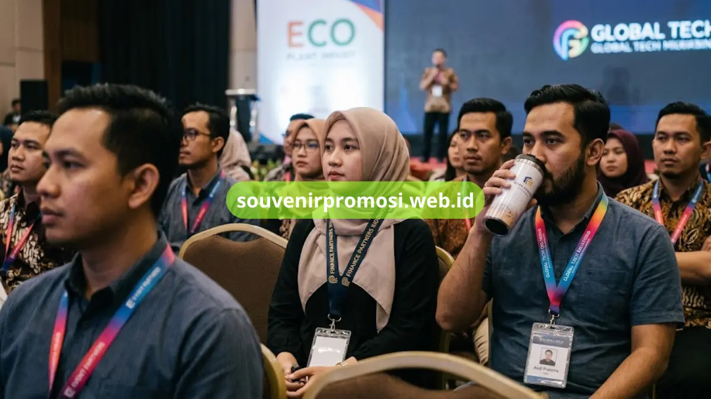

Lanyard custom printing untuk souvenir promosi adalah tali gantungan id card yang dicetak dengan logo, warna, dan desain khusus sesuai identitas perusahaan, dan menjadi salah satu merchandise korporat paling banyak dipesan karena biaya produksinya efisien dan tingkat keterpakaiannya tinggi.
Artikel ini merangkum tujuh jenis lanyard custom printing yang paling sering dipilih instansi dan korporat, lengkap dengan karakteristik bahan, teknik cetak, dan skenario pemakaiannya, sehingga Anda dapat langsung menentukan jenis yang paling sesuai dengan kebutuhan acara atau branding kantor.
Poin Penting
- Lanyard custom printing tersedia dalam beberapa teknik cetak utama: sablon, digital printing, dan woven, masing-masing punya karakter warna dan daya tahan berbeda.
- Bahan lanyard yang umum dipakai untuk souvenir promosi meliputi polyester, nylon, dan katun, dengan tingkat kehalusan cetak yang berbeda-beda.
- Pemilihan jenis lanyard biasanya disesuaikan dengan jumlah pemesanan, kompleksitas logo, dan anggaran acara.
- Souvenir Promosi menyediakan layanan cetak lanyard custom dengan pilihan aksesori clip, kait buaya, hingga id card holder.
- Pemesanan dalam jumlah besar umumnya mendapatkan penyesuaian harga per satuan yang lebih rendah.
Daftar Isi
- 1. Lanyard Sablon Custom untuk Anggaran Terbatas
- 2. Lanyard Digital Printing Full Color untuk Logo Detail
- 3. Lanyard Woven untuk Kesan Premium Instansi
- 4. Lanyard dengan ID Card Holder Terintegrasi
- 5. Lanyard Tali Pipih untuk Volume Pemesanan Besar
- 6. Lanyard dengan Aksesori Kait Tambahan
- 7. Paket Bundling Lanyard dan Merchandise Korporat
- Kenapa Memesan di Souvenir Promosi
- FAQ
1. Lanyard Sablon Custom untuk Souvenir Promosi Anggaran Terbatas
Lanyard sablon custom adalah pilihan paling ekonomis untuk souvenir promosi karena proses cetaknya sederhana dan cocok untuk pemesanan dengan anggaran terbatas namun tetap ingin menampilkan logo perusahaan secara jelas.
Teknik sablon bekerja dengan menekan tinta langsung ke permukaan tali menggunakan cetakan atau screen, sehingga cocok untuk desain logo satu hingga tiga warna. Hasil cetak sablon cenderung solid dan tahan gesekan, meski untuk gradasi warna kompleks hasilnya kurang maksimal dibanding metode digital. Jenis ini banyak dipilih untuk seminar, pelatihan internal, dan acara dengan skala peserta menengah.
Souvenir Promosi menyediakan lanyard sablon custom dengan opsi bahan polyester standar maupun nylon yang lebih halus, lengkap dengan pilihan lebar tali 1,5 cm hingga 2 cm sesuai kebutuhan branding Anda. Cek katalog lanyard sablon dan ajukan penawaran harga di souvenirpromosi.web.id.
2. Lanyard Digital Printing Full Color untuk Logo Detail
Lanyard digital printing full color menjawab kebutuhan souvenir promosi dengan desain logo bergradasi, foto, atau kombinasi banyak warna yang tidak dapat dijangkau teknik sablon konvensional.
Metode digital printing menggunakan sistem sublimasi sehingga tinta meresap ke serat kain dan menghasilkan warna tajam dengan detail tinggi, termasuk untuk logo bertipe gradient atau ilustrasi rumit. Jenis lanyard ini kerap dipakai perusahaan yang ingin menonjolkan identitas visual brand secara maksimal pada acara peluncuran produk, konferensi, maupun pameran korporat berskala besar.
Bagi perusahaan yang membutuhkan hasil cetak presisi tinggi untuk logo kompleks, lanyard digital printing full color dari Souvenir Promosi dapat menjadi solusi utama. Hubungi tim Souvenir Promosi untuk konsultasi desain dan simulasi warna sebelum produksi massal.
3. Lanyard Woven untuk Kesan Premium Instansi
Lanyard woven merupakan jenis lanyard di mana logo dan tulisan ditenun langsung ke dalam struktur kain, sehingga menghasilkan tampilan timbul yang lebih premium dan cocok untuk instansi yang mengutamakan kesan formal dan elegan pada souvenir promosinya.
Karena proses tenunnya, lanyard woven umumnya membutuhkan waktu produksi lebih panjang dan minimum order lebih tinggi dibanding sablon atau digital printing, namun daya tahannya terhadap pencucian dan gesekan jauh lebih unggul. Jenis ini kerap dipilih untuk lanyard identitas tetap karyawan, bukan sekadar souvenir sekali pakai.
Untuk kebutuhan lanyard woven dengan identitas jangka panjang, tim Souvenir Promosi siap membantu proses desain benang dan simulasi tenun sebelum Anda melakukan pemesanan resmi.
4. Lanyard Custom dengan ID Card Holder Terintegrasi
Lanyard custom dengan id card holder terintegrasi menggabungkan fungsi tali gantungan dan wadah kartu identitas dalam satu paket souvenir promosi, sehingga lebih praktis digunakan peserta acara maupun karyawan tetap.
Kombinasi ini populer untuk acara yang mewajibkan penggunaan tanda pengenal, seperti seminar nasional, pameran dagang, dan program onboarding karyawan baru. Selain logo pada tali, area holder biasanya juga dapat dicetak atau ditempel stiker identitas tambahan, sehingga fungsi branding menjadi ganda dalam satu produk souvenir.

Souvenir Promosi menyediakan paket lanyard plus id card holder dengan pilihan holder bening standar maupun holder custom cetak. Pesan paket lengkapnya langsung melalui katalog di souvenirpromosi.web.id.
5. Lanyard Tali Pipih untuk Volume Pemesanan Besar
Lanyard tali pipih adalah jenis lanyard klasik dengan struktur tali datar sederhana yang paling efisien diproduksi dalam volume besar, menjadikannya pilihan favorit untuk souvenir promosi acara dengan ribuan peserta.
Struktur tali pipih memudahkan proses cetak baik sablon maupun digital printing berjalan cepat dan konsisten pada skala produksi tinggi, sehingga waktu pengerjaan pesanan dalam jumlah besar dapat lebih terjaga. Jenis ini banyak dipakai oleh event organizer, panitia job fair, dan instansi pemerintah untuk kebutuhan acara masif.
Untuk pemesanan lanyard tali pipih dalam skala ribuan pieces, Souvenir Promosi menawarkan skema harga bertingkat sesuai kuantitas. Ajukan permintaan penawaran volume besar melalui tim sales kami.
6. Lanyard Custom dengan Aksesori Kait Tambahan
Lanyard custom dengan aksesori kait tambahan menghadirkan fleksibilitas fungsi, karena selain kait buaya standar tersedia pula pilihan kait putar, kait pengait kunci, hingga breakaway safety clip yang menambah nilai fungsional souvenir promosi.
Pemilihan aksesori kait biasanya disesuaikan dengan skenario penggunaan lanyard: kait buaya cocok untuk id card yang sering dilepas-pasang, sedangkan breakaway safety clip lebih disarankan untuk lingkungan kerja pabrik atau area dengan risiko tersangkut mesin. Detail aksesori ini sering menjadi nilai tambah yang membedakan souvenir promosi standar dengan yang lebih fungsional dan aman digunakan sehari-hari.
Souvenir Promosi menyediakan berbagai pilihan aksesori kait yang dapat dikombinasikan bebas dengan jenis tali dan teknik cetak pilihan Anda. Diskusikan kombinasi aksesori yang paling sesuai bersama tim kami sebelum checkout.
7. Paket Bundling Lanyard Custom dan Merchandise Korporat Lain
Paket bundling lanyard custom dan merchandise korporat lain menggabungkan lanyard dengan item souvenir promosi lain seperti pulpen, tumbler, atau totebag dalam satu paket pemesanan, sehingga proses procurement souvenir acara menjadi lebih ringkas dan efisien dari sisi waktu maupun biaya pengiriman.
Skema bundling ini umumnya lebih diminati oleh divisi HRD dan panitia event yang membutuhkan beberapa jenis souvenir sekaligus untuk satu acara, karena mempermudah koordinasi vendor dan konsistensi desain branding di seluruh item merchandise. Souvenir Promosi memfasilitasi kebutuhan ini melalui layanan bundling custom sesuai anggaran dan jumlah peserta acara Anda.
Lihat pilihan paket bundling merchandise korporat lengkap dan minta simulasi harga di souvenirpromosi.web.id.
Kenapa Memesan Lanyard Custom Printing di Souvenir Promosi
Souvenir Promosi melayani pemesanan lanyard custom printing untuk kebutuhan souvenir promosi instansi, korporat, dan event organizer dengan pilihan teknik cetak sablon, digital printing, dan woven yang dapat disesuaikan dengan anggaran serta tenggat waktu acara. Tim kami membantu proses konsultasi desain, simulasi warna, hingga penjadwalan produksi agar pesanan lanyard custom Anda siap digunakan tepat waktu.
Bagi perusahaan yang membutuhkan estimasi harga cepat, Souvenir Promosi menyediakan formulir permintaan penawaran yang dapat diisi langsung melalui website resmi, lengkap dengan opsi konsultasi jenis bahan dan aksesori sebelum keputusan pemesanan diambil. Dapatkan penawaran lanyard custom printing Anda sekarang di souvenirpromosi.web.id, atau hubungi tim kami langsung untuk konsultasi gratis.